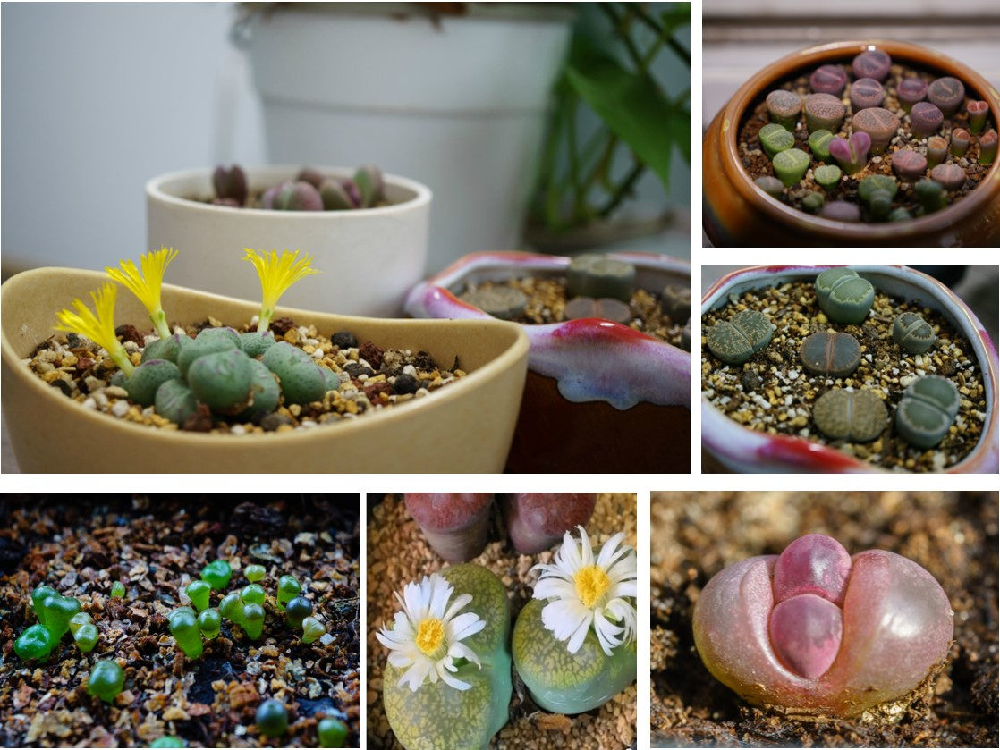
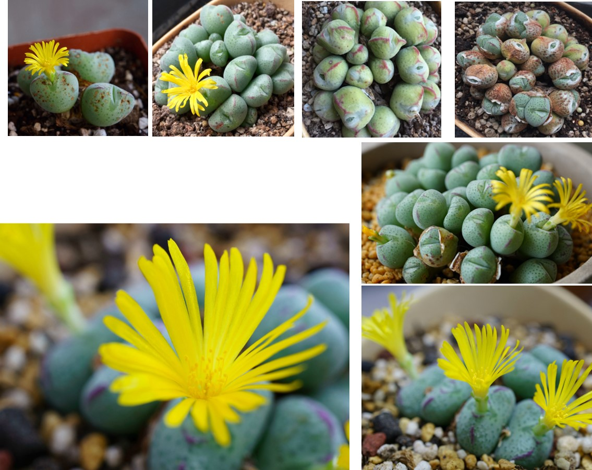

Lithops
Lithops, a kind of succulent plant that grow in arid southern Africa desert, got this name from their stone-like appearance. Their seeds were small like dust, it takes tears for them to grow from a small green sprout into a adult plant. Watching this progress really tests one’s patience and I find it very interesting.
This conophytum cluster grew from four heads to 30+ heads in four years and flowered every year in October. Its really adds a bright touch to the bleak autumn days.
最初的四头，蜕皮、分裂，到现在的三十多头，生生不息，多么神奇的生命。